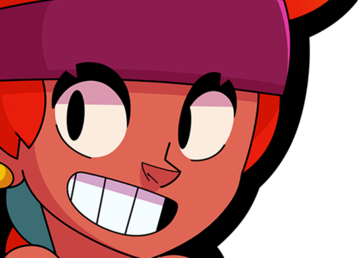
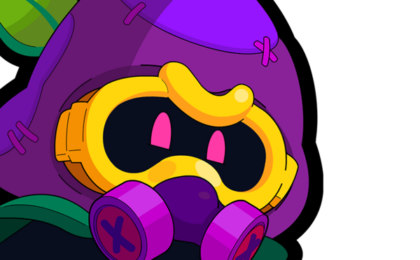
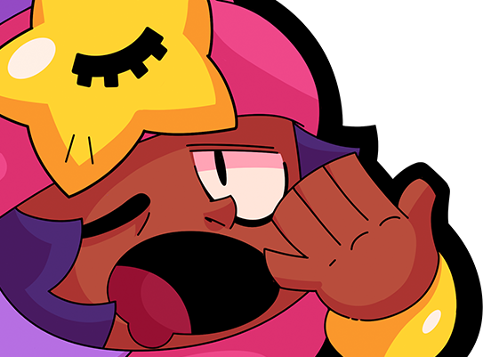
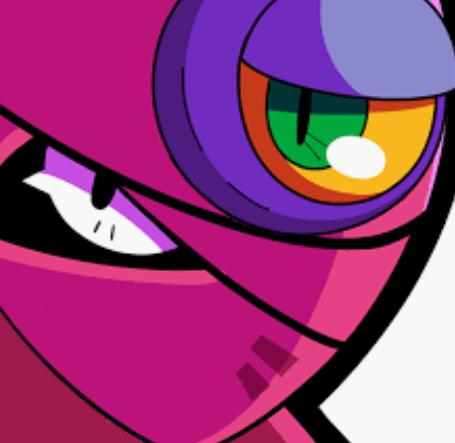
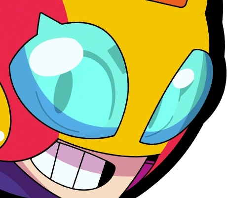
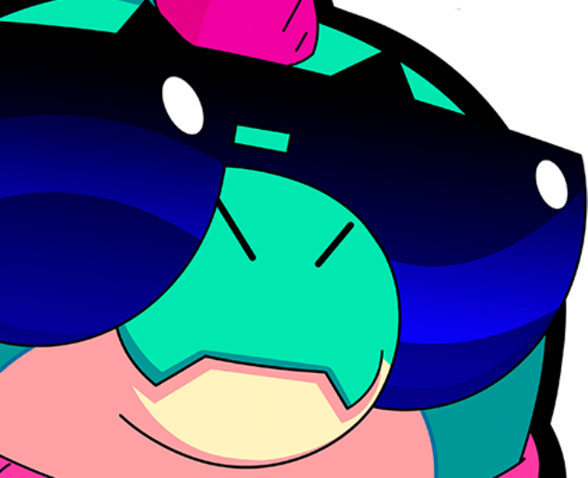
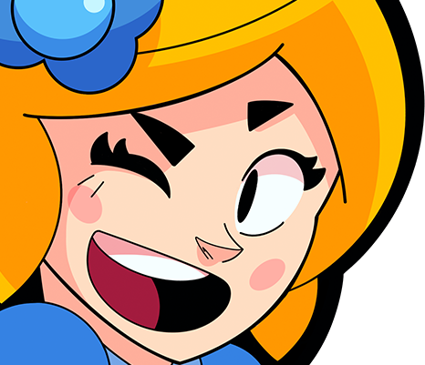
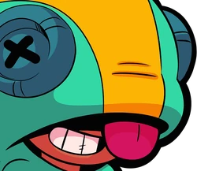

El update de febrero de 2026 ha cambiado Brawl Stars profundamente: con el Brawler número 100 Sirius y la Brawler 101 Najia, el nuevo sistema Prestige y los Buffies renovados, el meta se ha reorganizado. Aquí están los 10 mejores Brawlers – y qué significa para el quiz Brawl Mystery.
El nuevo Brawler hito. Sirius recolecta "sombras" de enemigos caídos y las convoca con su Super. En el momento adecuado, 3 sombras pueden cambiar completamente el resultado de una partida. Especialmente fuerte en modos de objetivo. En Brawl Mystery: paleta oscura/negro-violeta, año 2026, Ultra Legendario.

Amber lleva años siendo una de las mejores Legendarias. Sus líneas de fuego controlan grandes zonas del mapa y obligan a los enemigos a moverse. Difícil de contrarrestar sin un counter-pick específico. En el quiz: diseño naranja/rojo, Legendaria, 2020.

La Super de Cordelius aisla a un enemigo en una dimensión de sombras – 1 contra 1 sin ayuda de aliados. Decide peleas de equipo eliminando jugadores clave. En el quiz: habilidades de setas, Legendario, 2023.
Recién llegada: Najia lanza serpientes venenosas y genera daño de veneno sostenido. Extremadamente efectiva contra Brawlers de alta salud. Su gadget llena zonas clave con charcos de veneno. En el quiz: tonos arena, Mítica, 2026.

Sandy duerme en combate y hace invisible a su equipo con su Super – una de las habilidades de equipo más fuertes del juego. Imprescindible en Gem Grab y Hot Zone. En el quiz: azul/marrón claro, Legendario, 2019, Controlador.

La Super de Tara (agujero negro) aspira a todos los enemigos cercanos – perfecta para peleas de equipo. Con su segunda habilidad (apoyo de fantasma) es viable en muchos modos. En el quiz: morado/oscuro, Mítica, Controladora, 2017.

Max da a su equipo un boost de velocidad con su Super – eso cambia peleas enteras. Sus ataques son rápidos y de buen alcance. En el quiz: rosa/morado, Mítica, Apoyo, 2019.

La Super de Buzz lanza un gancho hacia los enemigos – iniciación perfecta para equipos. Combinado con alta salud es un front-liner muy amenazante. En el quiz: azul/turquesa, Épico, 2021.

Piper es devastadora en mapas abiertos – desde el máximo alcance hace daño enorme. En mapas cerrados cae. En el quiz: violeta claro/rosa, Épica, Francotiradora, 2017.

La Super de Leon lo hace invisible – perfecto para ataques sorpresa. Con el sistema Buffie ha ganado consistencia. En el quiz: verde/azul verdoso, Legendario, Asesino, 2018.
El nuevo sistema Prestige (a partir de 1.000 trofeos) cambia el meta indirectamente: ya que los jugadores juegan más tiempo en el nivel Prestige, los Brawlers fuertes se usan más. Los Brawlers S-Tier como Sirius y Cordelius se vuelven aún más relevantes.
Para Brawl Mystery esto significa: los nuevos Brawlers top también aparecerán más frecuentemente como puzzles diarios. ¡Aprende bien sus características, colores y lore!